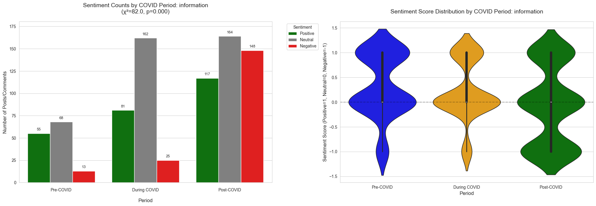
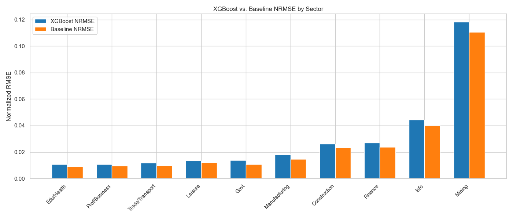
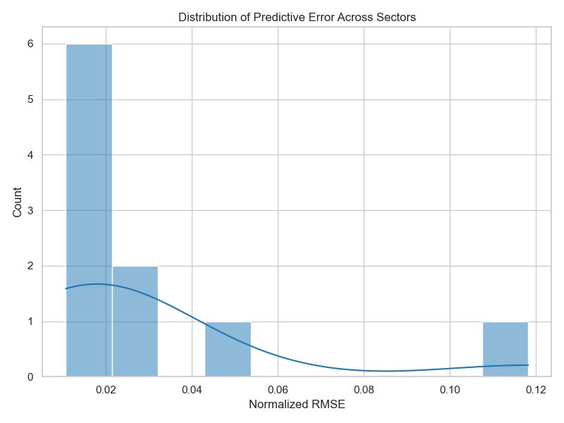
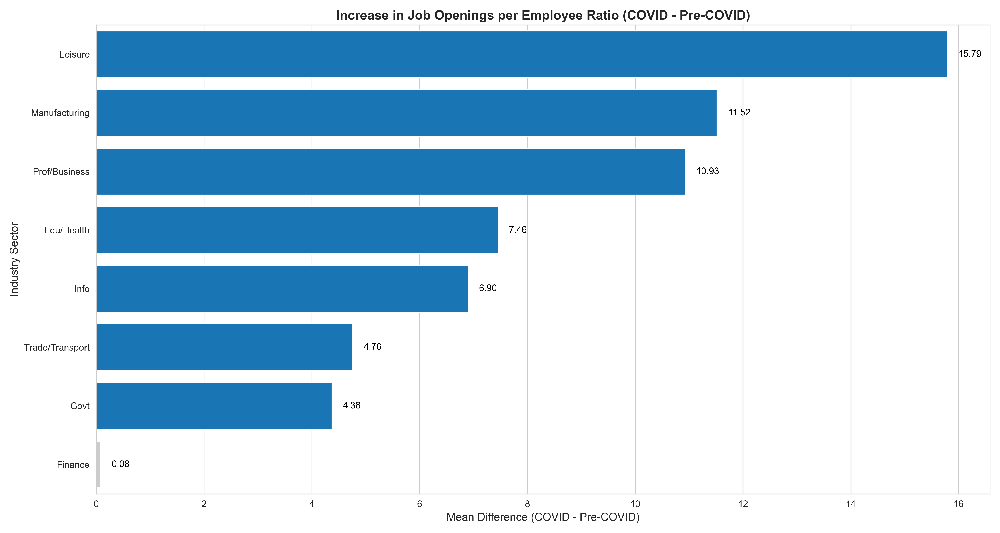
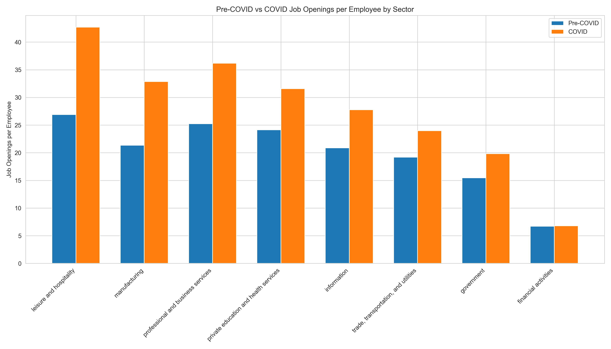
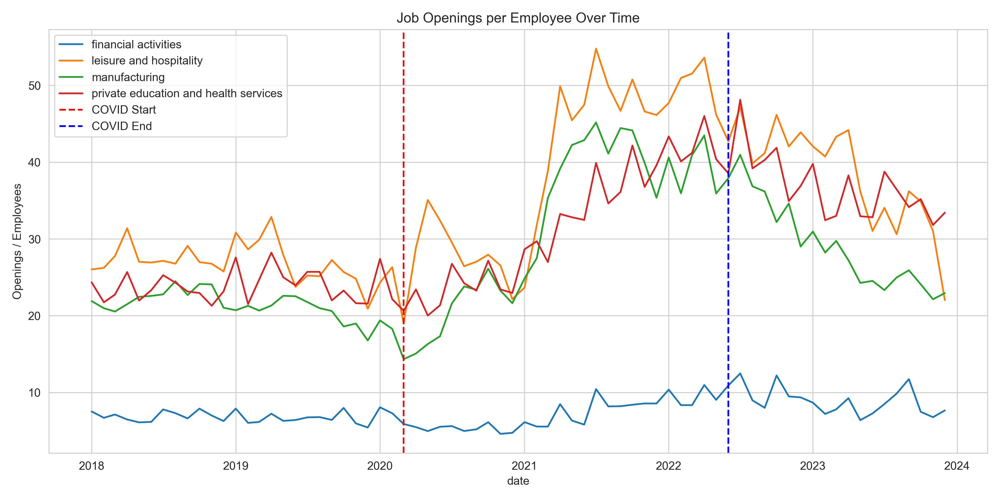
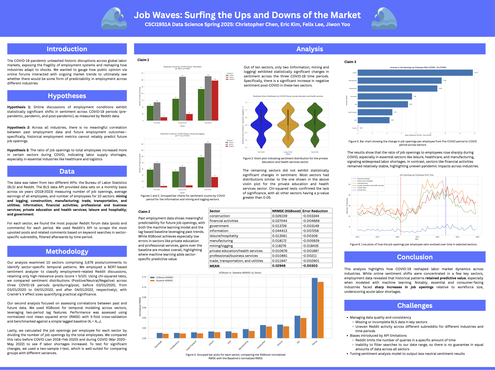

Context
The COVID-19 pandemic disrupted labor markets worldwide, shifting workplace norms and triggering sector-specific volatility. This project investigates how these disruptions were perceived in real-time by workers and whether employment trends could have been predicted from structured and unstructured data sources.
Overview
Job Waves is a collaborative data science capstone project for CSCI 1951A at Brown University. Our team of four explored U.S. Bureau of Labor Statistics (BLS) datasets and Reddit discourse to analyze employment trends from 2018–2023 across ten economic sectors. We framed three hypotheses, conducted sentiment and statistical analysis, and built predictive models to reveal hidden patterns in labor supply and demand dynamics.
Hypotheses & Data
- H1: Online sentiment around employment shifted significantly across COVID phases.
- H2: Historical employment data has limited predictive power for future job openings.
- H3: Job opening-to-employee ratios increased substantially in essential sectors during the pandemic.
We collected monthly BLS data on job openings, employee counts, and earnings, and scraped relevant Reddit posts using keyword and subreddit filters. These sources were temporally aligned and sector-mapped for multi-dimensional analysis. While each team member contributed to specific hypotheses, I (Jiwon Yoo) led the end-to-end analysis of Hypothesis 3, from data processing to statistical evaluation.
Methodology
Sentiment Analysis: We applied a fine-tuned BERTweet model and augmented it with lexicon adjustments to enhance signal strength in emotionally neutral posts. Preprocessing included stopword filtering, regex cleansing, and sampling normalization.
Predictive Modeling: Lag-based features from BLS job opening datasets were used to train XGBoost regressors under a rolling cross-validation framework. TimeSeriesSplit ensured temporal generalization while avoiding leakage.
Hypothesis 3 (My Focus): I calculated a job openings-to-employees ratio metric by sector and performed Welch’s t-tests to compare pre-pandemic and pandemic periods. I controlled for sample variance, computed Cohen’s d to quantify magnitude of shifts, and ensured reproducibility across 10 sectors through bootstrapped resampling. My scripts include robust edge-case handling for missing entries in BLS data and sector-level time series slicing.
Analysis & Results
H1 – Sentiment Shift: Across multiple sectors, sentiment polarity showed a statistically significant shift between Pre-COVID and COVID phases (p < 0.001). The Information sector, for example, displayed an increase in negative sentiment density during the pandemic, as confirmed by chi-squared testing and violin plot visualization. This suggests heightened emotional response and uncertainty within affected industries.
H2 – Predictive Modeling Accuracy: XGBoost models consistently outperformed naive baselines in most sectors, especially in Education and Healthcare, achieving lower NRMSE scores. Error distributions indicated strong generalization with low-variance predictions, while gain-based feature importance showed that both job openings and employee count became more predictive post-2020, suggesting shifts in market dynamics.
H3 – Labor Shortages in Essential Sectors: Results confirmed significant structural labor shortages in sectors like Leisure & Hospitality, Healthcare, and Education. The average job openings-to-employee ratio rose dramatically post-COVID, with Leisure & Hospitality experiencing the steepest rise (+15.8 openings per employee). Statistical tests (Welch’s t-test and Cohen’s d) confirmed the strength and scale of the effect (Cohen’s d = 2.17). Bootstrapped validation across 10 sectors reinforced the robustness of this finding.
Visualizations
Hypothesis 1 – Sentiment Analysis

Left: Distribution of post sentiment across COVID phases (Information sector).
Right: Violin plot showing sentiment score density. Chi-squared test confirms statistically significant shift (p < 0.001).
Hypothesis 2 – Predictive Modeling

XGBoost vs Baseline: Most sectors show improved NRMSE over naive baselines, with better generalization in Education and Health sectors.

Error Spread: Histogram of NRMSE values across sectors indicates skew toward low error with few outliers in volatile industries.

Feature Importance: Gain-based analysis of employee count across time. Trade/Transport and Manufacturing show rising influence in predictions.

Temporal Shift: Importance of job openings increases markedly post-2020, suggesting change in predictive dynamics across folds.
Hypothesis 3 – Labor Shortage Analysis

Magnitude of Change: Bar plot showing average increase in job openings per employee across sectors. Leisure sector leads with +15.8 openings.

Before/After Comparison: Paired bars show absolute ratio shifts between Pre-COVID and COVID periods. Visualizes sectoral gaps at a glance.

Time Series Trends: Tracked ratio changes over time in four representative sectors. Notable structural shifts begin Q2 2020 and remain elevated.
Challenges
- Subreddit coverage was inconsistent across sectors, complicating NLP generalizability.
- API limits introduced temporal sparsity in Reddit post retrieval.
- BLS data required aggressive imputation and filtering, particularly in less documented industries.
Socio-Historical Context & Ethical Considerations
The study reflects a narrow demographic—Reddit users skew younger and tech-savvy—introducing selection bias. We maintained ethical data handling by avoiding PII storage and logging data source metadata. We acknowledge our analysis does not capture the full labor market spectrum, especially informal or underreported segments.
Reflection
This project provided a unique opportunity to lead sector-specific labor market analysis in a real-world, team-based setting. Through my focus on Hypothesis 3, I deepened my skills in statistical testing, time series segmentation, and data cleaning for noisy government datasets. Overall, the project bridged theoretical methods with socially meaningful insights and showed how blended data pipelines can inform economic decision-making in volatile times.
Final Poster
